Современные мировые программы
Основа обучения — признанные во всём мире британские программы Pearson, по которым учатся миллионы детей в разных странах.
В Do English дети не зубрят слова ради оценок. Они играют, исследуют, общаются, создают проекты и постепенно начинают думать на английском языке.
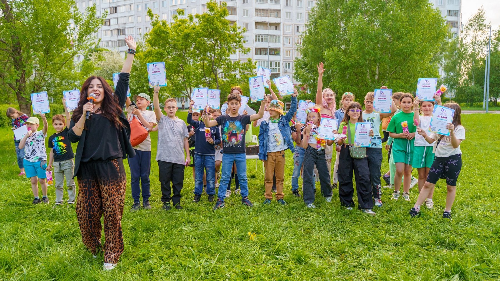
Десять шагов, в которых живое общение, движение и игра сменяют друг друга — поэтому ребёнок не успевает заскучать.
Основа обучения — признанные во всём мире британские программы Pearson, по которым учатся миллионы детей в разных странах.
Дети сами выполняют задания, проходят игровые миссии и взаимодействуют с интерактивными упражнениями.
Мы учим не переводить предложения, а понимать английский и использовать его в речи.
Почему «How do you do?» больше не работает, чем критика мешает ребёнку и как стать с педагогом одной командой.
Заполните короткую анкету — мы подберём программу и свяжемся с вами.
Заполнить анкетуМы объединили лучшие мировые образовательные программы, современные цифровые технологии и тёплую атмосферу, в которой ребёнку хочется учиться снова и снова.
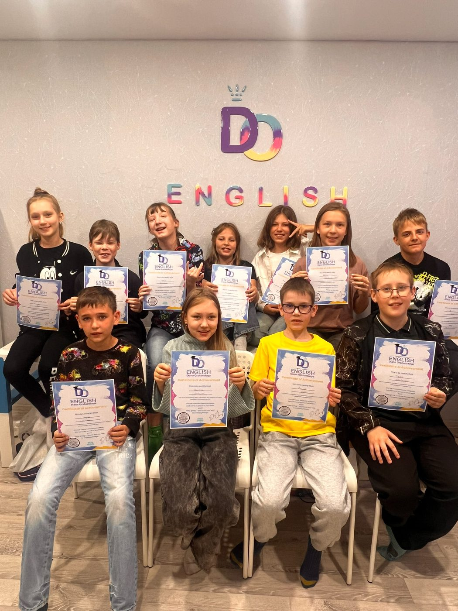
Do English — школа английского языка для детей и подростков.
Мы убеждены, что английский должен стать для ребёнка инструментом общения, творчества и новых возможностей, а не предметом, который приходится зубрить.
Именно поэтому мы объединили современные мировые методики преподавания, интерактивные технологии и тёплую атмосферу, в которой детям комфортно учиться, ошибаться, задавать вопросы и постепенно достигать высоких результатов.
Сегодня в школе занимаются дети от 5 до 16 лет в небольших группах, сформированных по возрасту и уровню подготовки.
В школе работает круглосуточный чат поддержки, где можно задать вопрос, уточнить домашнее задание или получить необходимую информацию.
Основатель школы
Строит программы Do English на признанных мировых методиках и постоянно повышает квалификацию как преподаватель английского языка.
Посмотреть сертификатыЗаполните короткую анкету — мы подберём программу и свяжемся с вами.
На Рождестве, Хэллоуине и других мероприятиях дети смеются, общаются, играют и незаметно для себя осваивают живой разговорный английский — слова и выражения, которые редко встретишь в учебниках, но которыми пользуются носители языка каждый день.
Именно яркие эмоции помогают новой лексике запоминаться легко и надолго. А ещё они рождают любовь к английскому языку — такую, что наши ученики с нетерпением ждут следующего события, чтобы снова окунуться в эту атмосферу, встретиться с друзьями и открыть для себя что-то новое.
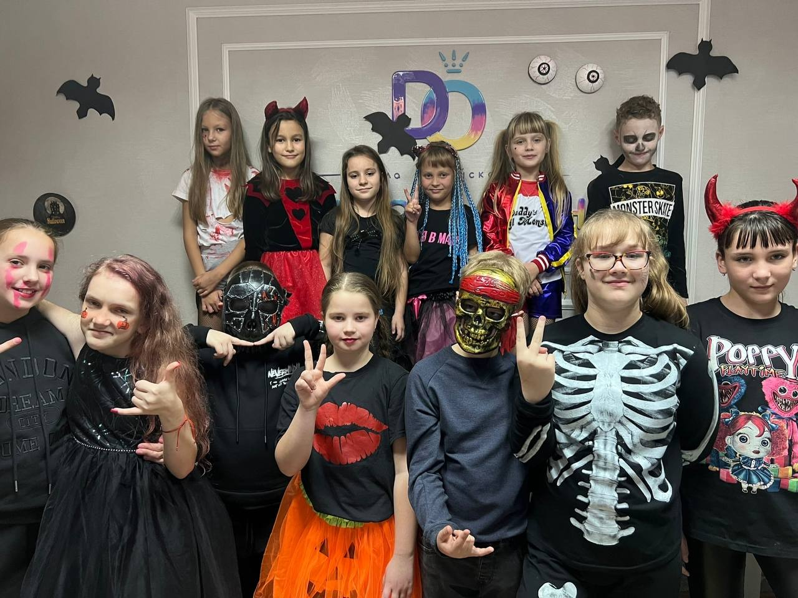
Хэллоуин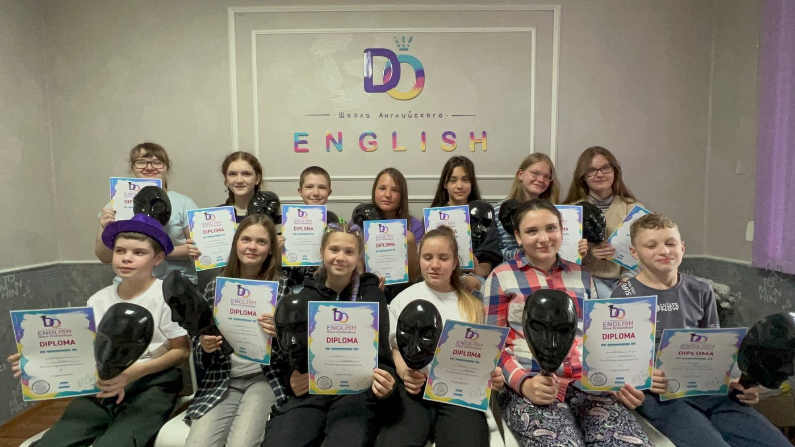
Выпускной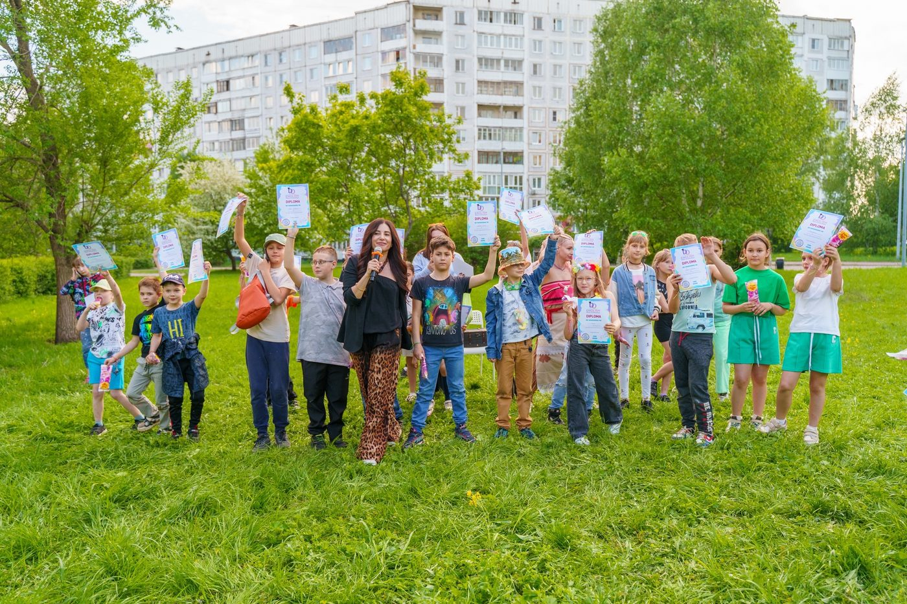
Наши праздники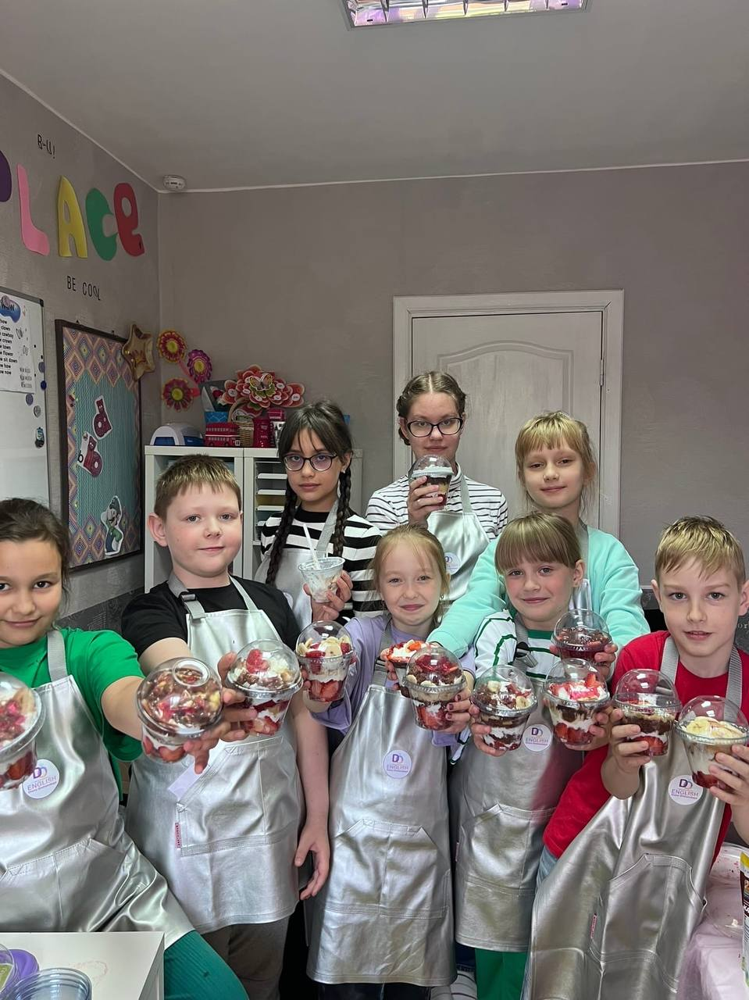
Мастер-классы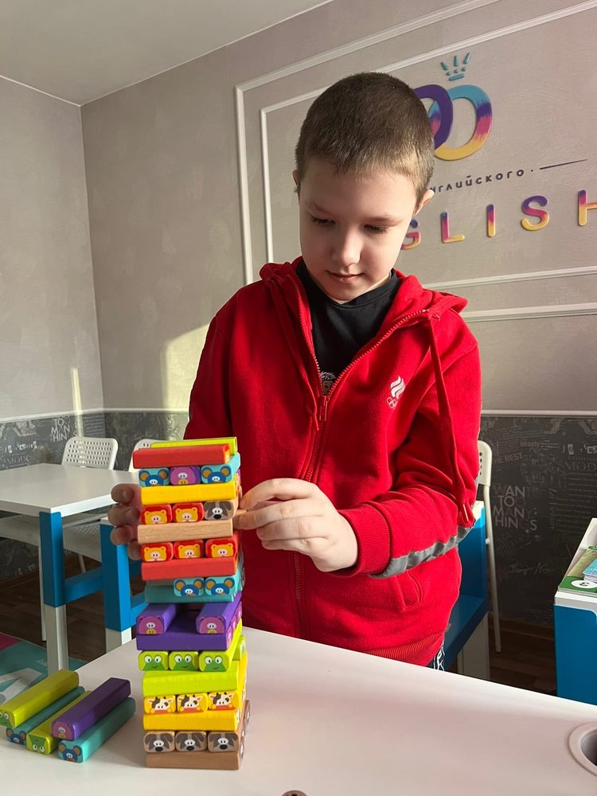
На занятиях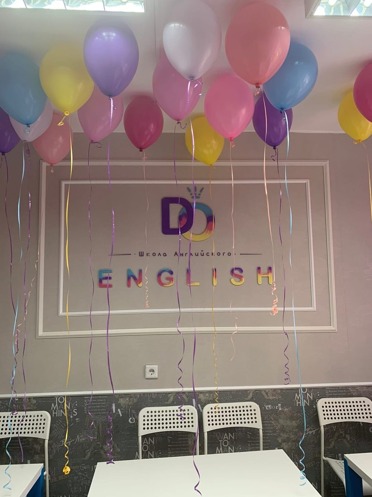
Атмосфера праздникаЗагляните в наши фотоальбомы
Позвоните, напишите в соцсетях или оставьте анкету — ответим на вопросы и подберём группу.
Телефон преподавателя
+7 (995) 160-12-49Заполните короткую анкету — мы подберём программу и свяжемся с вами.
Заполнить анкетуДиана Оршанская регулярно проходит обучение и подтверждает квалификацию на профильных семинарах для преподавателей английского языка.
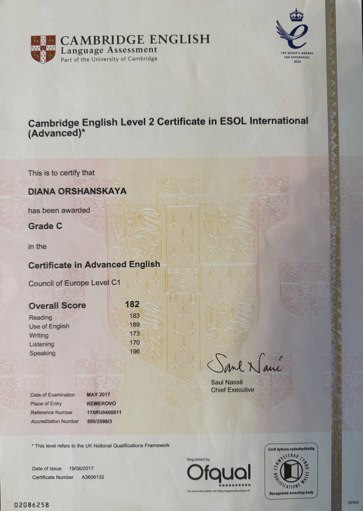
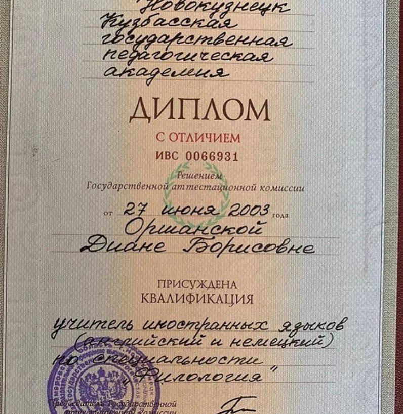
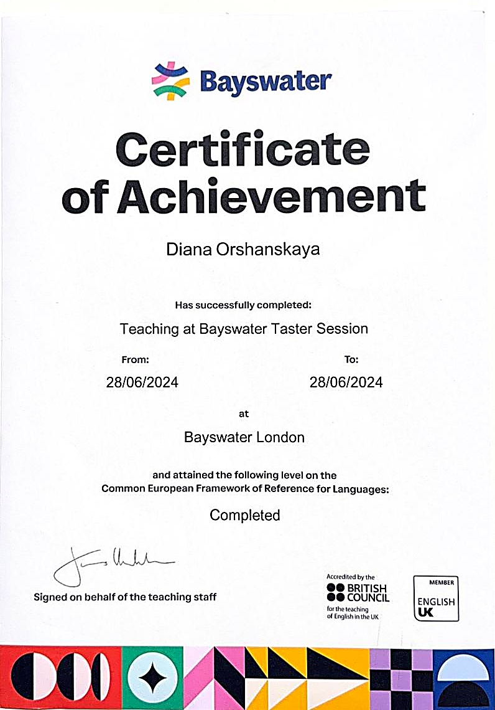
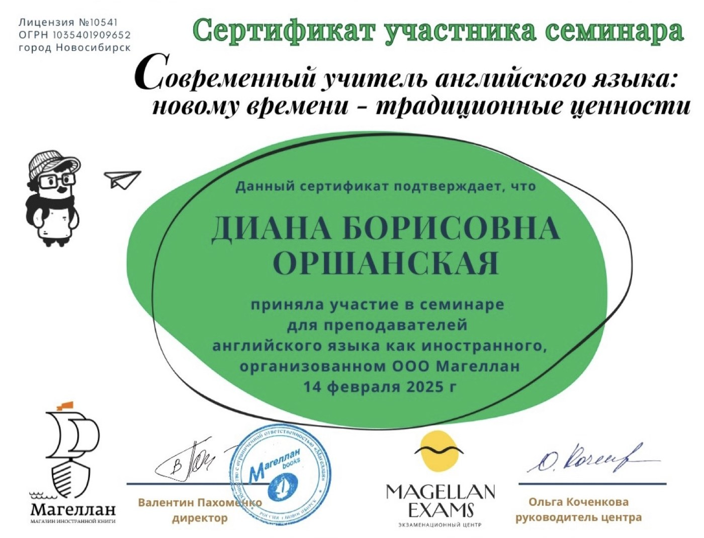
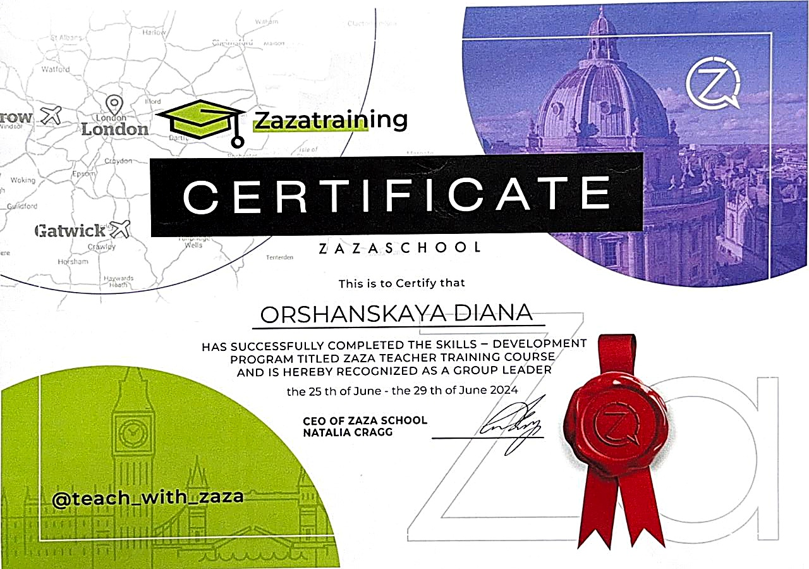
Нажмите на документ, чтобы рассмотреть его ближе
Мы — сообщество родителей и детей, которые реально любят учиться и растут вместе. Если вы ещё не с нами — добро пожаловать!
Напишите в сообщения, чтобы получить пробное занятие или узнать детали ближайшего мастер-класса.
Написать во ВКонтактеОсновой обучения являются признанные во всём мире британские программы Pearson, по которым учатся миллионы детей в разных странах. Они помогают развивать все языковые навыки одновременно: говорение, понимание речи, чтение, письмо, грамматику и словарный запас.
Для малышей используются лучшие мировые методики раннего обучения:
На занятиях дети не просто смотрят на экран. Они самостоятельно работают беспроводной мышкой, выполняют задания, проходят игровые миссии, выбирают ответы, двигают объекты и взаимодействуют с интерактивными упражнениями.
Им кажется, что они играют. На самом деле в этот момент развивается английская речь, внимание, память и мышление.
На уроках используются современные образовательные сервисы и игровые платформы. Каждый урок сочетает живое общение, движение, технологии и практику английского языка.
Мы учим не переводить предложения, а понимать английский и использовать его в речи. Дети задают вопросы, обсуждают темы, играют в ролевые игры, создают проекты и постепенно начинают говорить всё увереннее.
Мы даём не только традиционные упражнения. Регулярно ученики получают креативные видео-задания: снимают небольшие ролики, рассказывают о себе, показывают свои увлечения, описывают события и предметы на английском языке.
Так ребёнок развивает разговорную речь, учится свободнее говорить на камеру, видит себя со стороны и сохраняет собственное портфолио языкового роста.
После каждого раздела программы ученики проходят тестирование. У младших групп оно проходит в игровой форме. У старших — на современной интерактивной платформе, что позволяет объективно отслеживать прогресс и быстро находить темы, требующие повторения.
Мы не откладываем подготовку к экзаменам на последний год. Подготовка, необходимая для ОГЭ и ЕГЭ, интегрирована в современные учебные программы Pearson, поэтому ученики подходят к экзаменам значительно увереннее.
Регулярные домашние задания помогают закреплять материал между уроками. Мы стремимся сделать их разнообразными, интересными и посильными, чтобы английский становился естественной частью жизни ребёнка, а не очередной обязанностью.
Родители никогда не остаются один на один с возникающими вопросами.
Заполните короткую анкету — мы подберём программу и свяжемся с вами.